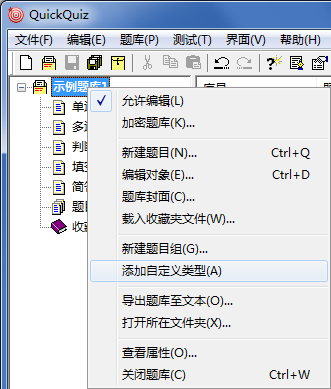
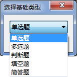
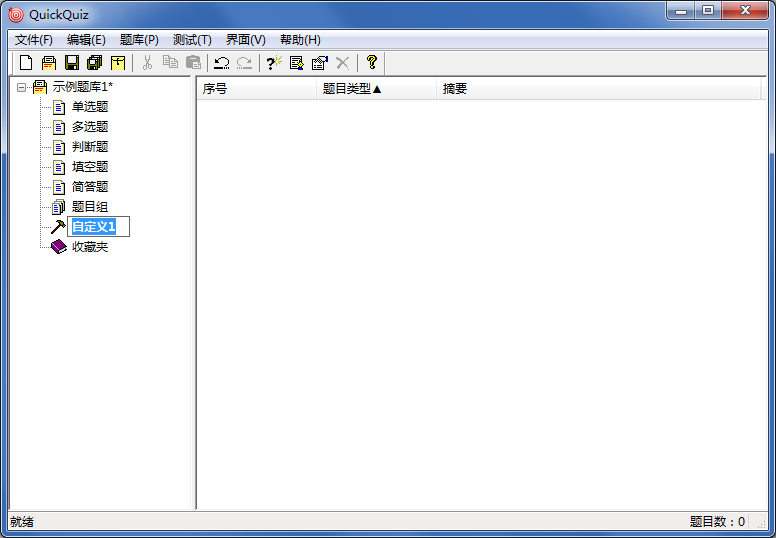

自定义类型
自定义类型
自定义类型指的是给某个默认题目类型设定一个新的名称，并添加一个新的类型列表保存题目。例如，基于“多选题”类型的“不定项选择”类型，用来区分两者。
- 点击菜单“题库——添加自定义类型”，或在主界面左侧窗格的题库节点上右键选择“添加自定义类型”；

- 选择基础类型，即设置当前自定义类型是属于哪种默认类型的。

- 设置自定义类型的名称，然后就可以向类型列表中添加题目了。

 | 自定义类型一旦建立，便不可修改其基础类型，在类型列表中添加的题目也不可修改类型；
自定义类型的名称可以修改。 |
|---|
删除自定义类型时，将会删除自定义类型下全部题目。
- 向题库窗格粘贴题目时，不可粘贴自定义类型题目；
- 向类型窗格粘贴题目时，只要基础类型相同，就可以粘贴；
- 粘贴时，跳过不符合以上规则的题目。
GX Software 2020-2021
V2.0